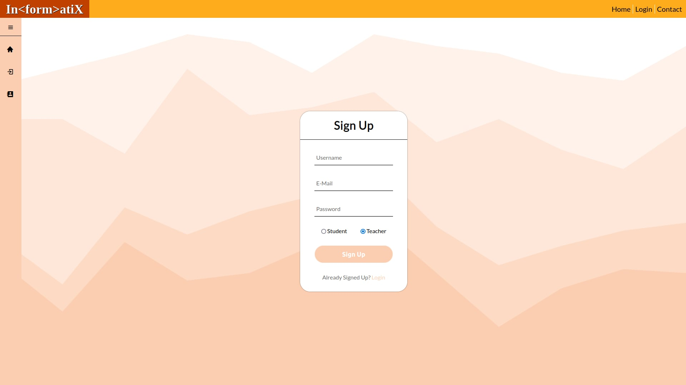
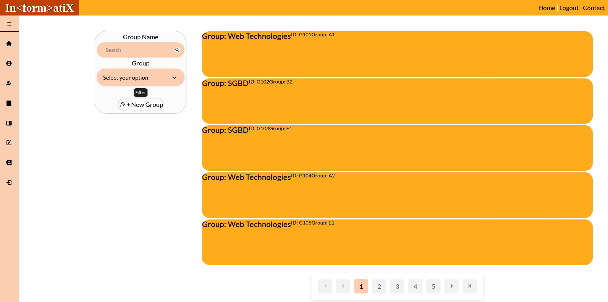
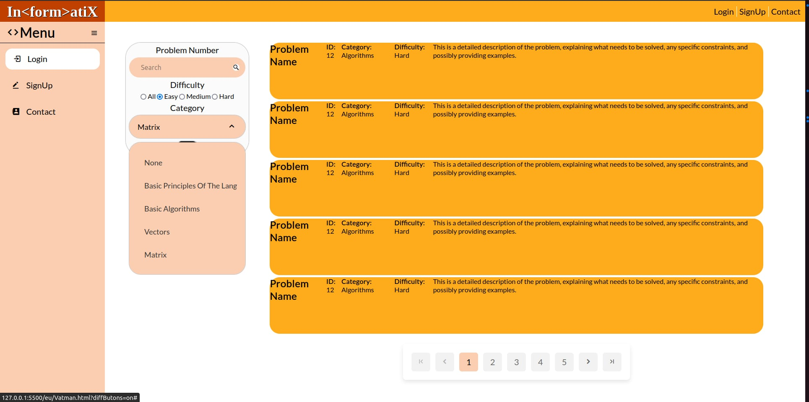

Scopul proiectului este de a dezvolta o aplicație web destinată elevilor de liceu pentru învățarea programării prin rezolvarea de probleme informatice. Această aplicație va oferi o platformă interactivă și educațională pentru rezolvarea problemelor de programare, facilitând interacțiunea între elevi și profesori într-un mediu virtual.
Audiența principală a proiectului sunt elevii de liceu interesați să învețe programare și să-și îmbunătățească abilitățile practice prin rezolvarea de probleme. De asemenea, profesorii care doresc să ofere elevilor lor o modalitate eficientă de a învăța programare vor beneficia de această aplicație.
Principalele obiective ale proiectului includ:
Produsul descris în acest SRS este o aplicație web nouă și autonomă, creată pentru a oferi elevilor de liceu o platformă interactivă și educativă pentru învățarea programării. Nu face parte dintr-o familie de produse existente și nu este un înlocuitor pentru sistemele existente. Aplicația este proiectată pentru a fi un produs complet nou, destinat să răspundă nevoilor educaționale ale utilizatorilor săi.
Principalele funcționalități ale aplicației includ:
Utilizatorii prevăzuți pentru acest produs pot fi clasificați în mai multe categorii, inclusiv:
Aplicația va funcționa într-un mediu online, accesibil prin intermediul unui browser web. Nu sunt necesare cerințe specifice legate de platforme hardware sau software, deoarece produsul va fi compatibil cu o gamă largă de dispozitive și sisteme de operare.
Unele constrângeri care vor influența opțiunile disponibile pentru dezvoltatori includ:
Documentația pentru utilizatori va include un manual de utilizare pentru a asigura o experiență plăcută și eficientă pentru utilizatori în utilizarea aplicației.
Interfața utilizatorului va fi concepută pentru a oferi o experiență intuitivă și ușor de utilizat. Caracteristicile logice ale interfeței utilizator vor include:
Aplicația va interacționa cu diferite dispozitive hardware, inclusiv computere personale, tablete și dispozitive mobile, asigurându-se că este compatibilă și funcțională pe toate aceste platforme.
Interfețele software vor fi utilizate pentru a permite comunicația și integrarea produsului cu alte componente software, inclusiv:
Cerințele asociate funcțiilor de comunicare vor include:
Această caracteristică permite utilizatorilor să creeze și să administreze conturi pe platformă. Este de prioritate medie, deoarece este esențială pentru funcționarea corectă a sistemului, dar nu este critică pentru funcționalitatea de bază.

Această caracteristică permite profesorilor să creeze și să gestioneze teme și grupe de elevi. Este de prioritate ridicată, deoarece este esențială pentru procesul educațional și interacțiunea dintre profesori și elevi.

Această caracteristică reprezintă pagina principală a platformei, unde utilizatorii pot vedea toate problemele disponibile și le pot filtra sau căuta pe cele specifice. Este de prioritate medie, deoarece este esențială pentru experiența de utilizare a platformei, dar nu este critică pentru funcționalitatea de bază.
